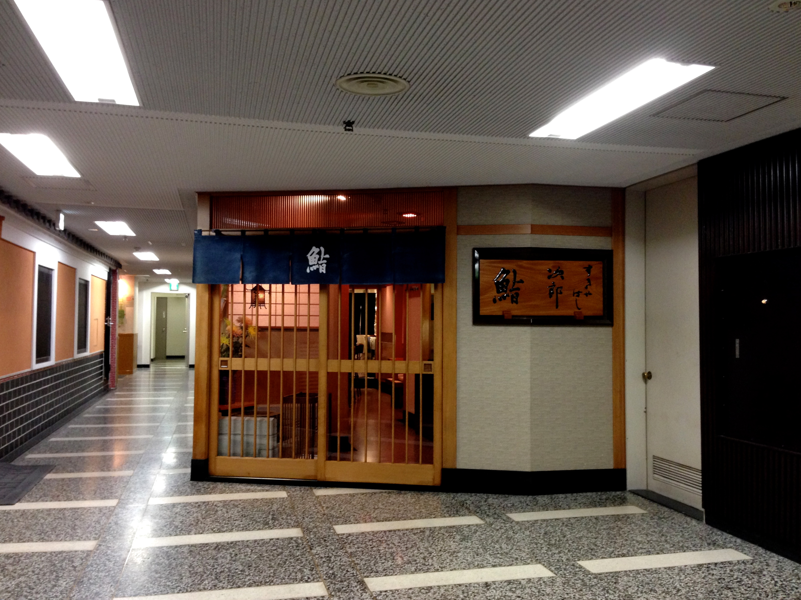
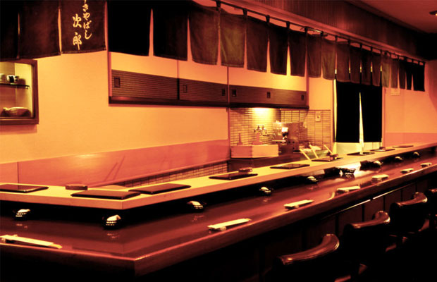

Sukiyabashi Jiro
Sukiyabashi Jiro is a sushi restaurant owned by Master Sushi Chef, Jiro Ono. This restaurant was recently awarded three stars from the Michelin
Guide, which is a well-known tourist guide. This restaurant offers a different type of sushi dining, called Omakase. Omakase is a style of sushi
dining where the chef decides what you'll eat for the visit. He also gets to decide when you stop eating, unless if you are full.
This restaurant was also featured in a documentary, "Jiro: Dreams of Sushi", which is where I first heard of it. The documentary features Jiro
Ono's backstory and the many sushi dishes that can be served there. Frankly, the movie made me crave for sushi and fueled my desire to visit the place.
Photograph (Exterior)
*Source: http://theskinnybib.com/wp-content/uploads/2012/11/IMG_2655.jpg
Photograph (Interior)
*Source: http://www.theworlds50best.com/asia/en/filestore/jpg/Sukiyabashi-Jiro-interior1.jpg
Road Map View
Satellite Map View
*As you can see, the restaurant is blocked by a building. This is because of the fact that the
restaurant is underground*
Times Square
Times Square in New York is a famous intersection mainly used for commercial billboards and advertisements. This intersection earned a name for
itself because of its bright and radiant colors from the advertisements.
This attraction was formerly named "Longacre Square", then changed to "Times Square", once The New York Times moved their headquarters in the Times
building in the Square.
Every new year, the Square has an event called the Ball Drop. This is when a new year arrives, on top of the Times Building, a giant ball slowly
descends down a pole to designate the start of a new year, once the ball reaches the bottom.
Photograph

*Source: https://upload.wikimedia.org/wikipedia/commons/c/c0/1_times_square_night_2013.jpg